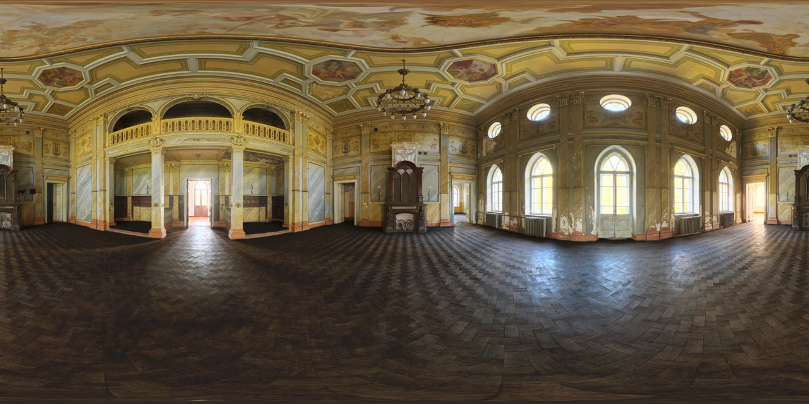

Point the camera at entrance arch staying 3 meters away from the
entrance arch.
Copyright © 2024 University of Moratuwa
Proudly presented by University of Moratuwa
Something went wrong. Please contact UOM stall.
Please rotate your device to portrait mode to use the AR experience.
